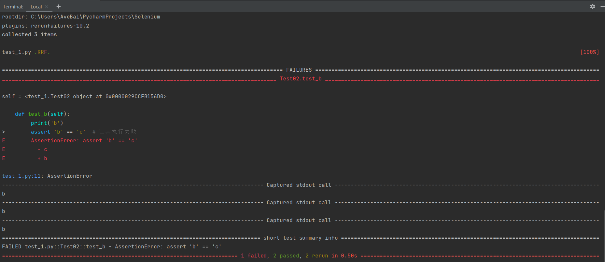
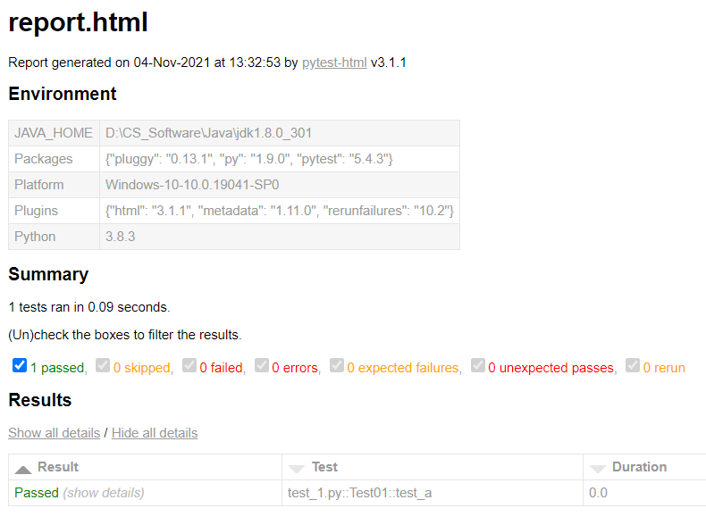
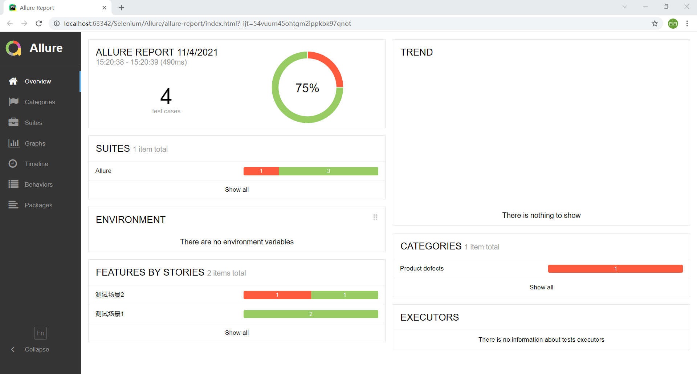
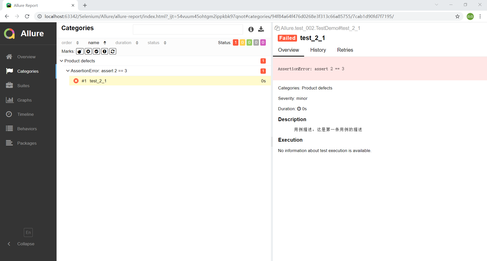

pytest 测试框架
[TOC]
与 unittest 单元测试框架大同小异，但是 pytest 更灵活美观，代码也是原生的 python 风格。
需要安装第三方库，我的环境是 python-3.8.3 + pytest-5.4.3。
pytest 规则
- 文件命名默认以 “test_” 开头或 “_test” 结尾；
- 测试类命名默认以 “Test” 开头；
- 函数命名默认以 “test_” 开头；
- 断言直接使用 python 的 assert；
- 和 unittest 一样，“.”代表断言成功，“F”代表断言失败。
1 | import pytest |
也可以把测试用例放在 class 外面，直接定义函数并执行。
测试固件
用于 class 外：
- setup_module 和 teardown_module，在整个文件的开始和最后执行一次。
- setup_function 和 teardown_function，在每个函数开始前后执行。
用于 class 内：
- setup_class 和 teardown_class，在整个class的开始和最后执行一次。
- setup_method 和 teardown_method，在每个方法开始前后执行。
测试用例
1 | import pytest |
如果测试用例定义在 class 外，则没有 self 参数。
pytest.main(["-s"]) 会执行当前文件所在目录下所有符合条件的测试用例，添加文件名可以指定执行一个文件，pytest.main(["-s", "test_1.py::Test01"]) 可以指定执行某个类。
失败重试
Pytest 本身不支持测试用例执行失败重试的功能，需要安装一个插件：pytest rerunfailures，然后就可以通过 “—reruns重试次数” 来设置测试用例执行失败后的重试次数。
1 | import pytest |
在命令行使用 “pytest test_1.py —reruns 2” 执行测试用例，结果如下：

可以指定断言失败后的重试间隔时间，增加 “—-reruns-delay” 参数。
例如 “pytest test_1.py —reruns 2 —reruns-delay 2”
标记机制
Pytest 提供了标记机制，借助 “mark” 关键字可以对测试函数/类/方法进行标记。
对测试用例进行分级
例如某些主流程的用例可以标记为 L1，次要流程的用例标记为 L2 等。这样的好处是可以在不同的情况执行不同的测试用例。例如，在做冒烟测试的时候，只需要执行 L1 级别的用例就行了。
一个测试用例可以标注多个级别。
1
2
3
4
5
6
7
8
9
10
11
12
13
14
15
16
17
18
19
20
21
22
23
24import pytest
class Test01():
def test_a(self):
print('aaaa')
assert 'a' == 'a'
def test_b(self):
print('bbbb')
assert 'b' == 'b'
class Test02():
def test_c(self):
print('cccc')
assert 'c' == 'c'
def test_d(self):
print('dddd')
assert 'd' == 'd'pytest -s “test_1.py” -m “L1” 可以只执行 L1 级别的用例。
pytest -s “test_1.py” -m “L1 or L2” 可以执行 L1 和 L2 级别的用例。
pytest -s “test_1.py” -m “not L1” 可以执行非 L1 级别的用例。
添加一个 pytest.ini 文件，配置所有 mark 可以避免警告。
1
2
3
4[pytest]
markers = L1
L2
L3跳过某些用例
使用 skip(reason=None) 实现无条件跳过
1
2
3
4
5
6
7
8
9class Test01():
def test_a(self):
print('aaaa')
assert 'a' == 'a'
def test_b(self):
print('bbbb')
assert 'b' == 'b'使用 skipif(condition, reason=None) 实现满足条件跳过
1
全局设置
可以将一些配置信息写入 pytest.ini 文件，注意文件内容不能包含中文。
（1）通过关键字 “addopts” 来设置命令行参数，如 “-s” 或 “-v” 监控、失败重试的次数、重试的时间间隔、按标签来执行，多个参数之间用空格分隔。示例如下：
1 | addopts = -v --reruns 2 --reruns-delay 2 -m "L1" |
（2）自定义标签
示例：
1 | markers = L1:level_1 |
（3）自定义测试用例查找规则
- 在当前文件目录中的 testcases 目录下查找测试用例：testpaths = testcases。
- 查找文件名以 “test” 开头的文件，也可以修改为以其他文件名开头：pythonfile =test*.py。
- 查找以 “Test*” 开头的类，也可以修改为以其他类名开头：python_classes = Test*。
- 查找以 “test_” 开头的函数，也可以修改为以其他函数名开头：pythonfunctions = test*。
测试报告
Pytest 框架支持多种形式的测试报告。
pythonpytest-html
这是一个第三方库。
1
2
3
4
5
6
7
8
9
10import pytest
class Test01():
def test_a(self):
print('aaaa')
assert 'a' == 'a'
if __name__ == '__main__':
pytest.main(["-s", "test_1.py", "--html=./report.html"])效果如下：

也可以在 pytest.ini 文件中配置，然后用命令行执行。
1
2
3
4
5
6
7
8[pytest]
addopts = -v --reruns 2 --reruns-delay 2 -m "L1 or L2" --html=./report.html
markers = L1:level_1 testcases
L2:level_2 testcases
testpaths = testcases
python_file = test_*.py
python_classes = Test*
python_functions = test_*Allure 测试报告
Allure基于 Java 开发，因此需要安装 Java 8 或以上版本的环境。
然后用 pip 安装 allure-pytest 插件。
再手动下载文件：“allure-commandline-2.16.1.zip”：
Central Repository: io/qameta/allure/allure-commandline/2.16.1 (apache.org)
解压后将它的 bin 目录添加到环境变量，在命令行输入 allure 验证。
下面是示例：
新建一个 package，创建 report 文件夹，添加两个测试文件。
1
2
3
4
5
6
7
8
9
10
11
12
13
14
15import pytest,allure
#标记场景
class TestDemo():
# 标记测试用例
# 标记用例级别
def test_1_1(self): # 用例1
a = 1 + 1
assert a == 2
def test_1_2(self):
assert 2 == 21
2
3
4
5
6
7
8
9
10
11
12
13
14
15
16
17
18import pytest,allure
#标记代码
class TestDemo():
def test_2_1(self):
a = 1 + 1
assert a == 3 # 断言失败
def test_2_2(self):
assert 2 == 2
if __name__ == '__main__':
pytest.main(['-s', '-q', '--alluredir', './report/'])运行 main 函数，report 文件夹下生成了几个 json 文件。
在命令行 cd 到该 package 路径，执行 allure generate —clean report，生成 allure-report 文件夹，查看里面的 index.html，效果如下：

默认打开的 ”Overview“ 菜单包括以下内容：
- 报告生成的时间、执行时间、执行的用例数量、环状图显示通过比例；
- 测试集合（class）的情况；
- 测试场景；
- 失败用例的信息。

在 ”Categories” 菜单可以看到断言失败的具体信息。
通过 “Suites” 菜单可以测试集合树的形式查看用例执行的结果。
在 “Graphs” 菜单可以看到用例执行状态的环状图、用例级别的柱状图、用例执行时间的柱状图。
定制化报告：
- feature：标注主要功能模块。
- story：标注features功能模块下的分支功能。
severity：标注测试用例的重要级别。
- blocker级别：致命缺陷。
- critical级别：严重缺陷。
- normal级别：一般缺陷，默认为这个级别。
- minor级别：次要缺陷。
- trivial级别：轻微缺陷。
step：标注测试用例的重要步骤。
- attach：用于向测试报告中输入一些附加的信息，通常是一些测试数据信息。
- name就是附件名称，body就是数据，attachment_type就是传类型。附件支持的类型有TEXT、HTML、XML、PNG、JPG、JSON、OTHER。
- issue：这里传的是一个连接，记录的是你的问题。
- testcase：这里传的是一个连接，记录的是你的用例。
- description：描述用例信息。
参考资料：
- 李鲲程，边宇明：Python实现Web UI 自动化测试实战. 北京：人民邮电出版社，2021
- pytest: helps you write better programs — pytest documentation
- Allure Framework (qameta.io)